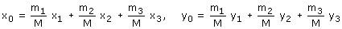
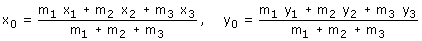

| Centro de masas de una distribución puntual Dada una distribución de masas puntuales: m1 (x1, y1) | m2 (x2, y2) |m3 (x3, y3) se denomina c.d.m a un punto cuyas coordenadas son la media ponderada de las coordenadas de cada masa La media ponderada se hace multiplicando la coordenada de cada masa por el porcentaje que representa dicha masa en la total de la distribución y sumando estas contribuciones  Con esta definición el c.d.m siempre estará más cerca de la masa más grande A efectos de cálculo las formulas anteriores se ponen como:  |